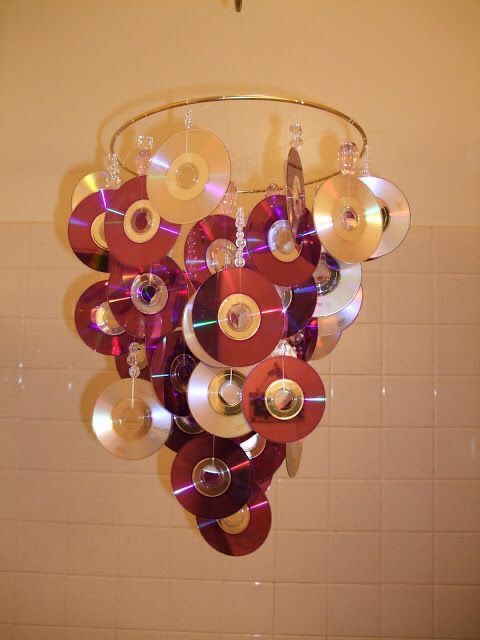
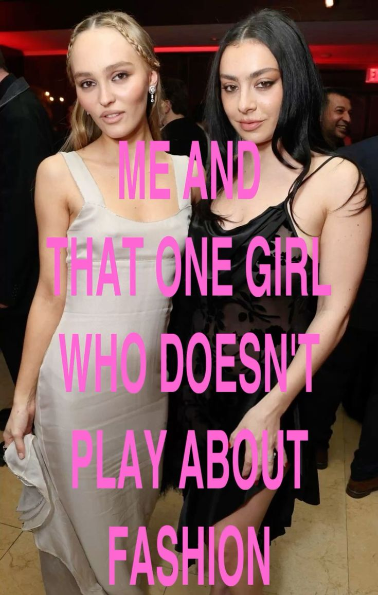
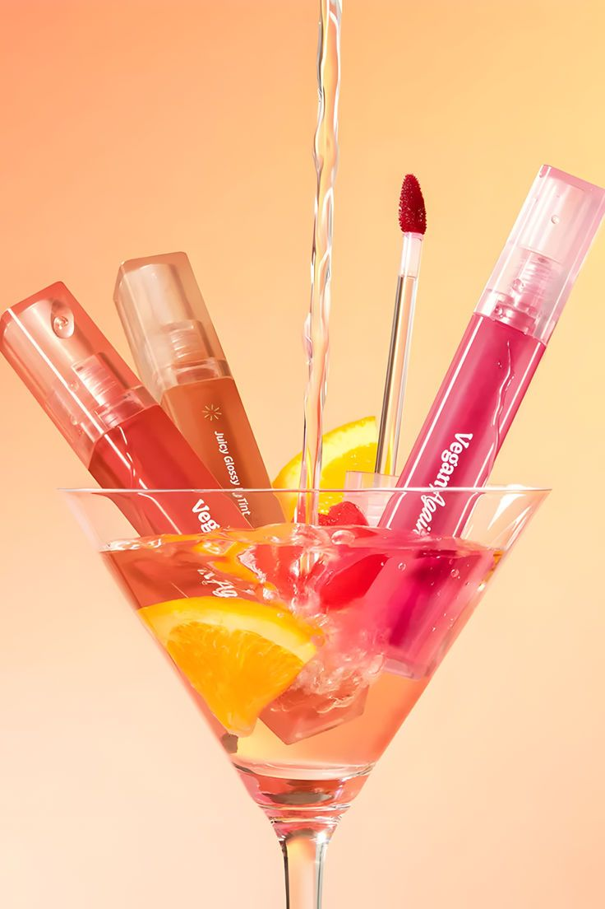

Тишина за кулисами — обманчива.
За тяжелыми бархатными занавесами кипит другая жизнь:
жизнь перед показом.
Когда яркие огни софитов освещают подиум, а взгляды сотен гостей устремляются на сверкающие наряды, кажется, что весь мир замирает в ожидании. Но за этой блестящей картинкой скрывается целый мир напряженной работы и волнительных моментов. Добро пожаловать в закулисье модных показов!
Задолго до того, как модели появятся на сцене, в закулисных комнатах кипит напряженная работа. Команды стилистов, визажистов и парикмахеров трудятся над созданием образов, которые должны идеально вписаться в концепцию шоу. Каждая деталь продумывается до мелочей - от формы ногтей до расположения каждой пряди волос. Атмосфера здесь наэлектризована предвкушением и небольшим волнением. Модели, облаченные в роскошные наряды, нервно поправляют макияж и прически, стараясь выглядеть безупречно. Стилисты отдают последние распоряжения, а организаторы бегают по закулисью, проверяя готовность к выходу.
И вот долгожданный выход на подиум. Модели, словно актеры на сцене, выходят один за другим, демонстрируя публике плоды кропотливой работы всей команды. Каждый шаг, каждый жест тщательно отрепетированы, чтобы создать безупречную картинку. Но даже в этот момент за кулисами не утихает напряжение. Организаторы следят за ходом показа, готовые в любую секунду вмешаться, если что-то пойдет не так. Стилисты внимательно наблюдают за своими "творениями", готовые в случае необходимости быстро внести коррективы.
Когда последняя модель покидает подиум, за кулисами раздаются облегченные вздохи. Команда может перевести дух, гордясь проделанной работой. Но впереди еще много дел - фотосессии, интервью, разбор ошибок и планирование следующего показа. Закулисье модных показов - это целый мир, полный напряжения, волнения и предвкушения. Здесь рождаются те образы, которые восхищают публику и задают тренды на сезон. И именно здесь, за яркими огнями софитов, кроется настоящая магия высокой моды.
Кино и телевидение подарили нам не просто персонажей — законодательниц моды, чьи образы вдохновляют миллионы.
От дерзких экспериментов Кэрри до безупречного минимализма Миранды — вот героини, которые научили нас одеваться.
"Дьявол носит Prada"
"Отчаянные домохозяйки"
"Секс в большом городе"
"Сплетница"
Миранда Пристли, Габриэль Солис, Кэрри Брэдшоу и Блэр Уолдорф - эти женские образы стали настоящими иконами стиля на все времена.
Героини культовых сериалов и фильмов, они запомнились зрителям не только своими сильными характерами, но и безупречным чувством стиля.
Миранда Пристли из "Дьявол носит Prada" - воплощение властной и харизматичной бизнес-леди. Ее безупречные деловые костюмы, дополненные изысканными аксессуарами, стали эталоном элегантности и профессионализма.
Каждый ее выход демонстрировал безукоризненный вкус и умение подчеркнуть свою индивидуальность.
Габриэль Солис из "Отчаянных домохозяек" - роковая красавица, чей стиль сочетал в себе соблазнительность и утонченность.
Ее вечерние платья, облегающие силуэты и яркие акценты в макияже навсегда запечатлелись в памяти зрителей как образ роскошной и уверенной в себе женщины.
Кэрри Брэдшоу из "Секса в большом городе" - иконa стиля для целого поколения.
Ее богемные наряды, сочетание винтажа и дизайнерских вещей, а также безграничная любовь к обуви стали источником вдохновения для модниц по всему миру.
Кэрри доказала, что мода - это способ самовыражения и источник радости.
Блэр Уолдорф из "Сплетницы" - воплощение элегантности и утонченности.
Ее изысканные платья, аккуратные прически и безупречный макияж стали эталоном стиля для поклонников сериала.
Блэр умела сочетать роскошь и сдержанность, создавая образы, которые вдохновляли и восхищали.
Эти героини навсегда вошли в историю моды, став настоящими иконами стиля.
Их образы продолжают вдохновлять и по сей день, доказывая, что истинный стиль - это не просто одежда, а способ самовыражения и отражение внутреннего мира.